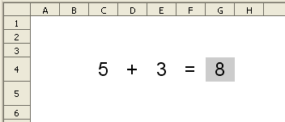

Sumar dos números d'un dígit en cada número sense avaluació
Presentació gràfica de l'activitat

Funcions que es fan servir en aquesta activitat
- Operador de sumar (+)
Objectiu de l'activitat
L'objectiu d'aquesta pràctica és la de sumar dos números d'un dígit en cada número veient el resultat en una cel·la determinada.
Desenvolupament de l'activitat
1. Obrir el calc i canviar el non del Full1 pel de M1P1 suma sense avaluació
2. Seleccionar l'àrea C4:G4 escrivint C4:G4 a l'àrea de full

i després prémer Retorn.
3. A la barra de menús, fer clic en Format i després clic en Fila per a finalment seleccionar Alçada. Apareix una finestra en la qual es pot escriure l'alçada en mm. Escriure 10mm o 1cm.
4. Fer un alineament de text horitzontal i vertical de les cel·les del rang C4:G4.
- Mida de la lletra: 14
- Tipus de lletra: arial
5. Escriure a la cel·la C4 un número d'un dígit (qualsevol número del 0 al 9).
6. Escriure a la cel·la D4 el signe + .
7. Escriure a la cel·la E4 un número d'un dígit.
8. Escriure a la cel·la F4 el signe = .
9. Escriure a la cel·la G4 qualsevol de les dues fórmules: =SUMA(C4;E4) o =C4+E4
10. Color de fons de la cel·la G4: gris 20%
11. Protegir la cel·la G4
- Fer clic a la cel·la C4 i després prémer la tecla Ctrl (retorn), i sense deixar de premer-la, fer clic a la cel·la E4. D'aquesta manera es sel·leccionen les cel·les C4 i E4, que apareixeran marcades en color invers (lletra blanca sobre fons negre).
- Anar Format | Cel·les (apareixerà la finestra d' Atributs de la cel·la)
- Fer clic a la pestanya Protecció de cel·les i desmarcar la casella Protegit. Aquesta apareix marcada per defecte; en aquest cas es traca de desactivar-la.
- Prémer el botó D'acord
- Anar a Eines | Protegeix el document | Full
- En la finestra Protegeix el full que haurà aparegut, es té l'opció de fer clic en D'acord, sense haver escrit cap contrasenya, o bé optar per escriure una contrasenya. En aquest cas, fer clic a D'acord sense escriure cap contrasenya.
Havent fet aquests passos, ja està protegida la cel·la G4, mentre que les cel·les C4 i E4 queden desprotegides i en condicions de poder introduir dades en elles. Fer la comprovació escrivint en aquestes cel·les. Quan s'intenta escriure a qualsevol cel·la protegida (la G4, per exemple), apareixerà un missatge indicant el següent: "Les cel·les protegides no es poden modificar". No serà el cas de les cel·les C4 i E4, on es poden introduir valors sense que aparegui cap missatge.
13. Desar el fitxer amb el nom M1
- Feu clic en la cel·la G4
- Fer clic al botó de l'Autopilot:funcions
- Apareix una finestra que es diu Auxiliar de funcions. A la pestanya Funcions, desplegar l'apartat Categoria i seleccionar Matemàtic. Després, desplegar l'apartat Funció i seleccionar SUMA.
- Fer clic en el botó següent i veureu com s'inserta de manera automàtica la funció =SUMA().
- Escriure a la primera casella de l'auxiliar de funcions la referència C4 (que és on hi ha el primer número a sumar).
- Escriure a la segona casella de l'auxiliar de funcions la referència E4 (que és on hi ha el segon número a sumar).
- Fer clic en d'acord i veureu con apareix el resultat de la suma en la cel·la G4. Observar que a la barra de fórmula es pot veure la fórmula =SUMA(C4;E4)
En la següent animació es pot veure de manera gràfica el procediment a seguir per insertar la funció SUMA a la cel·la G4: